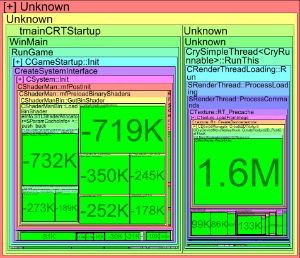
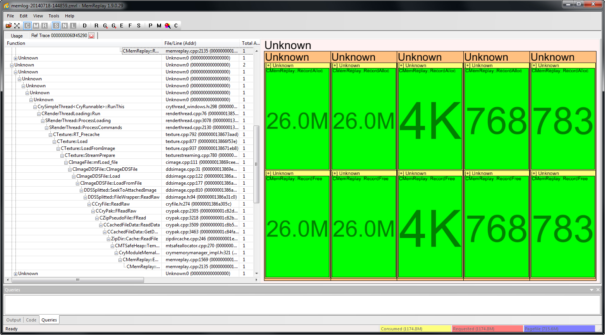

Обзор
Главы:
Проверка анализа отсутствия свободных ресурсов
Инструменты -> Отладка -> Анализ отсутствия свободных мест
Иногда вам нужно выяснить, какие распределения произошли в определенный период времени. С помощью Д-кнопка для получения подробной информации о выборе; учитываются как выделенные, так и бесплатные ресурсы.
Если распределение произошло за пределами области, но бесплатное находится внутри, MemReplay отобразит отрицательные числа, как показано на следующем снимке экрана.

Вместо того, чтобы нажимать кнопку Д-Кнопка, которую вы можете использовать Нет бесплатного анализа. При этом отображаются только выделения, в результате чего получается результат, аналогичный следующему снимку экрана.

Проверка кучи
Инструменты -> Проверить кучу
Эта опция создает графическое представление использования кучи памяти. Это может быть полезно для поиска больших блоков памяти или фрагментации.

Отслеживание истории распределения
Инструменты -> Отладка -> История распределения трассировки.
Эта опция дает обзор того, какие выделения, освобождения и ссылки повлияли на указанный адрес памяти.
В качестве примера на следующем снимке экрана показано, что по адресу памяти было выполнено пять выделений и, соответственно, пять освобождений. 0x0000000060f45290.
